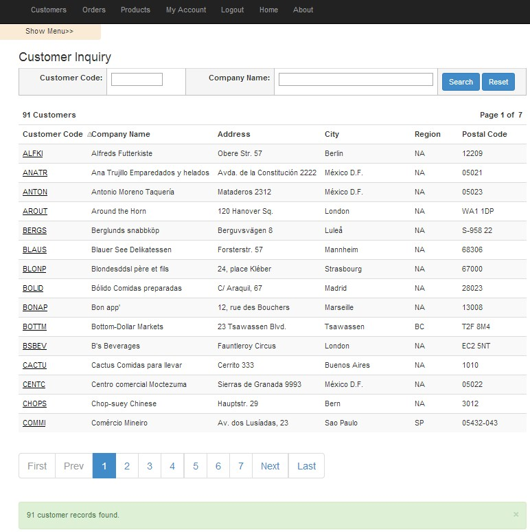
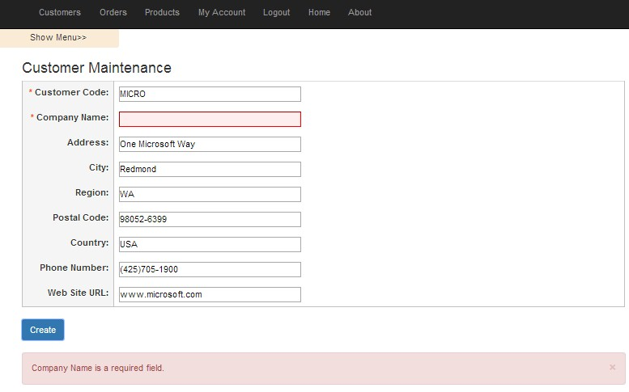
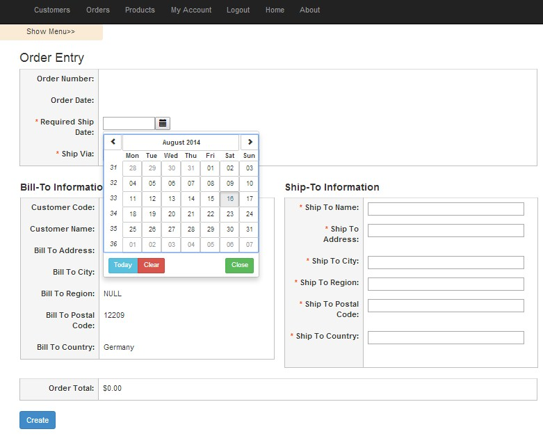
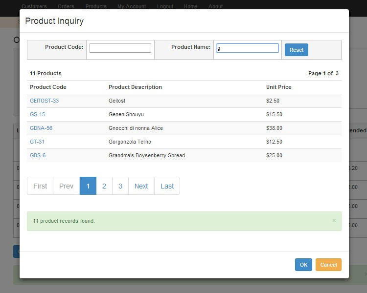

What's in a name? If you are a fan of the classic Seinfeld television show, then you know the name Donna Chang. Jerry meets Donna, who is not Chinese, but actually shortened her last name Changstein to Chang while taking on Chinese stereotypes, such as displaying interest in acupuncture or on one occasion pronouncing a word with a Chinese accent. Donna talks to George's mother over the phone, giving her advice (by citing Confucius). When George introduces Donna to his parents, George's mother realizes she is not Chinese and doesn't acknowledge her advice.
A single-page application (SPA), is defined as a web application or web site that fits on a single web page with the goal of providing a more fluid user experience akin to a desktop application. In a SPA, either all necessary code – HTML, JavaScript, and CSS – is retrieved with a single page load or the appropriate resources are dynamically loaded and added to the page as necessary, usually in response to user actions. The page does not reload at any point in the process, nor does control transfer to another page, although modern web technologies (such as those included in HTML5) can provide the perception and navigability of separate logical pages in the application. Interaction with the single page application often involves dynamic communication with the web server behind the scenes.
So how does this technology compare to ASP.NET Master pages? Well ASP.NET master pages allow you to create a consistent layout for the pages in your application. A single master page defines the look and feel and standard behavior that you want for all of the pages (or a group of pages) in your application. You can then create individual content pages that contain the content you want to display. When users request the content pages, they merge with the master page to produce output that combines the layout of the master page with the content from the content page.
When you start to dig deep into the differences between a single-page application and an ASP.NET Master Page implementation, you start to realize that they are actually are more similar to each other than different - being that a single-page application is simply a shell page to house content pages just like a master page, except that the shell page in a single-page application does not reload or execute like a master page does with each new page request. Perhaps the name Single-Page Application is an unfortunately name that may lead you to believe that the technology is not an appropriate choice for building web-based applications that need to scale to an enterprise-wide deployment that may consist of several hundred content web pages with thousands of users.
The goal of this article is to develop a single-page application that can be implemented with hundreds of content pages with all the functionality that an enterprise application needs to support thousands of users, including authentication, authorization and session state etc.
The sample application for this article will contain functionality to create and update user accounts, create and update customers and products. Additionally this application will also allow you to create and update sales orders including functionality to perform inquiries for all this information. To implement this, the sample application will be built using AngularJS. AngularJS is an open-source web application framework, maintained by Google and an AngularJS community.
AngularJS assists with creating single-page applications that only require HTML, CSS, and JavaScript on the client side. Its goal is to augment web applications with model–view–controller (MVC) capability, in an effort to make both development and testing easier. The library reads in HTML that contains additional custom tag attributes; it then obeys the directives in those custom attributes, and binds input or output parts of the page to a model represented by standard JavaScript variables. The values of those JavaScript variables can be manually set, or retrieved from static or dynamic JSON resources
The first thing you need to do is download the AngularJS Framework into your project. You can get the AngularJS framework at https://angularjs.org. The sample application for this article was developed using Microsoft Visual Studio Web Express 2013 Edition, so I installed AngularJS from a Nuget Package by executing the command line: Install-Package AngularJS -Version 1.2.21 in the Nuget Package Management Console. To keep things simple and flexible, I created an empty Visual Studio web application project and selected the core references to the Microsoft Web API 2 library. This application will use the Web API 2 library for RESTful API server requests.
Now the first two things you need to do when building a single-page application with AngularJS is to set-up the shell page and the routing table for retrieving the content pages. To get started, the shell page only needs a reference to the AngularJS JavaScript library and an ng-view directive to tell AngularJS where the content pages need to be rendered in the shell page.
<!DOCTYPE html> <html lang="en"> <head> <title>AngularJS Shell Page example</title> </head> <body> <div> <ul> <li><a href="#Customers/AddNewCustomer">Add New Customer</a></li> <li><a href="#Customers/CustomerInquiry">Show Customers</a></li> </ul> </div> <div ng-view></div> <script src="http://ajax.googleapis.com/ajax/libs/angularjs/1.0.7/angular.min.js"></script> <script src="app.js"></script> </body> </html>
In the above shell page example, the links map to AngularJS routes. The ng-view directive on the div tag is a directive that complements the AngularJS $route service by including the rendered content page of the selected route into the shell page. Every time the current route changes, the included view changes with it according to the configuration of the $route service. For example, if the user selected the "Add New Customer" link, AngularJS would render the content for adding a new customer within the div tag where the ng-view directive exists. The rendered content is a partial page of HTML.
The following app.js JavaScript file is also referenced in the shell page. This JavaScript will create an AngularJS module for the application. Additionally, the configuration for all the routes to the application will be defined in this file. You can think of an AngularJS module as a container for the different parts of your application. Most applications have a main method that instantiates and wires together the different parts of the application. AngularJS applications don't have a main method. Instead modules declaratively specify how an application should be bootstrapped and configured. The sample application for this article will only have one AngularJS module even though there are several distinct areas of the application (customers, products, orders and users).
Now, the main purpose of the app.js file below is to set-up the AngularJS routes. The AngularJS $routeProvider service accepts when() methods, which matches a pattern for a Uri. When a match is found, the partial page HTML content is loaded into the shell page along with the associated controller file for the content. The controller file is simply the JavaScript file that will get referenced with content for that specified route request.
//Define an angular module for our app
var sampleApp = angular.module('sampleApp', []);
//Define Routing for the application
sampleApp.config(['$routeProvider',
function($routeProvider) {
$routeProvider.
when('/Customers/AddNewCustomer', {
templateUrl: 'Customers/AddNewCustomer.html',
controller: 'AddNewCustomerController'
}).
when('/Customers/CustomerInquiry', {
templateUrl: 'Customers/CustomerInquiry.html',
controller: 'CustomerInquiryController'
}).
otherwise({
redirectTo: '/Customers/AddNewCustomer'
});
}]);
AngularJS Controllers are nothing more than plain JavaScript functions, which are bound to a particular scope. Controllers are used to add logic to your view. Views are HTML pages. These pages simply show the data that we bind to them using two-way data binding. Basically it is the controller's responsibility to glue the Model (data) with the View.
<div ng-controller="customerController">
<input ng-model="FirstName" type="text" style="width: 300px" />
<input ng-model="LastName" type="text" style="width: 300px" />
<div>
<button class="btn btn-primary btn-large" ng-click="createCustomer()"/>Create</button>
For the above AddCustomer template, the ng-controller directive will reference the JavaScript function customerController that will perform all the data binding and JavaScript functions for the view.
function customerController($scope)
{
$scope.FirstName = "William";
$scope.LastName = "Gates";
$scope.createCustomer = function () {
var customer = $scope.createCustomerObject();
customerService.createCustomer(customer,
$scope.createCustomerCompleted,
$scope.createCustomerError);
}
}
As I was developing the sample application for this article, the first two scalability issues that became obvious with a single-page application, is that out of the box, AngularJS required that all the JavaScript files and controllers for the application be referenced and downloaded from within the shell page upon bootstrapping the application at start-up. For a large-scale application that may contain hundreds of JavaScript files, this did not seem to be ideal. The other issue I had was with the AngularJS routing table. All the examples I found included hard coding of all the routes for each content page. I didn't want a solution that contained hundreds of entries in the routing table.
For this sample single-page application, I didn't want to load all my JavaScript files upfront in the shell page. This application could grow to hundreds of content and JavaScript files. Large applications often require hundreds of JavaScript files. Generally, JavaScript files are loaded one by one using script tags. Additionally, each file can potentially be dependent on other files. To dynamically load the JavaScript files for this sample application, I discovered the RequireJS JavaScript library. RequireJS is a well-known JavaScript module and file loader, which is supported in the latest versions of popular browsers. In RequireJS, JavaScript code is separated into modules with each file handling a single responsibility. Additionally, dependencies may need to be configured when loading files. RequireJS provides a clean way to load and manage dependencies for your Javascript applications. You can download RequireJS at http://requirejs.org/ or if you are using Visual Studio you can use the Nuget command: Install-Package RequireJS.
Out of the box, AngularJS comes with a routing configuration where you are able to return different content pages based on a route path. Instead of hard coding all my routes, I wanted to use a convention-based technique. Basically I decided to name all my content pages and associated JavaScript files with a naming convention that would allow the application to parse the name of the route and dynamically determine which JavaScript file was needed with the content page. For example, the Customer Maintenance content page is named CustomerMaintenance.Html and the AngularJS JavaScript Controller file is named CustomerMaintenanceController.js. Using a convention-based approach will allow the routing table to be un-encumbered with hard coded routes.
Let's begin to walk-through the sample application. To begin with, every large application requires some sort of authentication and authorization mechanism to control access to the application. This application will use a Login page that incorporates ASP.NET Forms Authentication to authentication and authorization purposes. Once authenticated, the user will have access to the rest of the application. Since large applications are locked down, they usually have separate master pages, one for displaying and formatting the login page and another master page for displaying the rest of the application which often contains a header with a main menu bar, a side-bar for additional menu options, a content area for the content pages and a footer area. This sample application supports this by having multiple single-page shell pages. After successful login, the user will be routed to a new shell page.
The first shell page is index.html. This page will house the login and register user content pages. As you can see, there is only one JavaScript file referenced. Main.js will contain the RequireJS set-up and configuration information for dynamically loading modules, JavaScript files and other dependencies for this application as they are needed for each individual content page request. Following the convention-based routing technique, index.html will be controlled by the AngularJS controller indexController.js file. After the user successfully registers or logs in, the application will be routed to a new shell page called applicationMasterPage.html which is similar to index.html but will contain a sidebar of menu options. In the shell page, there is a reference to the ng-view directive. As previously stated, this directive will tell AngularJS where to display the content pages in the shell page.
<!DOCTYPE HTML>
<html xmlns="http://www.w3.org/1999/xhtml">
<head>
<title> </title>
<script data-main="main.js" src="scripts/require.js"> </script>
<link href="Content/angular-block-ui.css" rel="stylesheet" />
<link href="Content/bootstrap.css" rel="stylesheet" />
<link href="Content/Application.css" rel="stylesheet" />
<link href="Content/SortableGrid.css" rel="stylesheet" />
</head>
<body ng-controller="indexController" ng-init="initializeController()" >
<div class="navbar navbar-inverse navbar-fixed-top">
<div class="container">
<div class="navbar-collapse collapse" id="MainMenu">
<ul class="nav navbar-nav" ng-repeat="menuItem in MenuItems">
<li> <a href="{{menuItem.Route}}">{{menuItem.Description}} </a> </li>
</ul>
</div>
</div>
</div>
<!-- ng-view directive to tell AngularJS where to put the content pages-->
<div style="margin: 75px 50px 50px 50px" ng-view> </div>
</body>
</html>
This application will be using RequireJS For Asynchronous Script Loading And JavaScript Dependency Management. As shown previously, the shell pages will only have one reference to JavaScript files, that is main.js which resides in the root folder of this application. This is the configuration file for RequireJS. In the below JavaScript file there are three sections.
Section 1 defines all the paths needed for loading the common JavaScript files and modules needed for the application. Since RequireJS only loads JavaScript files, no ".js" extension is needed for the actual JavaScript file.
Section 2 defines a shim section. The Shim configuration allows RequireJS to load non-AMD compatible scripts. Asynchronous module definition (AMD) is a JavaScript API for defining modules such that the module and its dependencies can be asynchronously loaded. It is useful in improving the performance of websites by bypassing synchronous loading of modules along with the rest of the site content. In addition to loading multiple JavaScript files at runtime, AMD can be used during development to keep JavaScript files encapsulated in many different files. It is then possible to concatenate and minify all the source JavaScript into one small file used for production deployment.
Section 3 bootstraps and start-ups the application configuration by referencing application-configuration.js which resides in the scripts folder
require.config({
baseUrl: "",
// alias libraries paths
paths: {
'application-configuration': 'scripts/application-configuration',
'angular': 'scripts/angular',
'angular-route': 'scripts/angular-route',
'angularAMD': 'scripts/angularAMD',
'ui-bootstrap' : 'scripts/ui-bootstrap-tpls-0.11.0',
'blockUI': 'scripts/angular-block-ui',
'ngload': 'scripts/ngload',
'mainService': 'Services/mainServices',
'ajaxService': 'Services/ajaxServices',
'alertsService': 'Services/alertsServices',
'accountsService': 'Services/accountsServices',
'customersService': 'Services/customersServices',
'ordersService': 'Services/ordersServices',
'productsService': 'Services/productsServices',
'dataGridService': 'Services/dataGridService',
'angular-sanitize': 'scripts/angular-sanitize',
'customersController': 'Views/Shared/CustomersController',
'productLookupModalController': 'Views/Shared/ProductLookupModalController'
},
// Add angular modules that does not support AMD out of the box, put it in a shim
shim: {
'angularAMD': ['angular'],
'angular-route': ['angular'],
'blockUI': ['angular'],
'angular-sanitize': ['angular'],
'ui-bootstrap': ['angular']
},
// kick start application
deps: ['application-configuration']
});
AngularJS has two execution phases, the configuration phase and the run phase. Application-Configuration.js will get executed by RequireJS which will kick off the AngularJS configuration phase. The initial configuration will set up the application routing using the AngularJS routeProvider service. As we walk-through this application, additional configuration functions will be added to the configuration phase during the bootstrapping of the application.
"use strict";
define(['angularAMD', 'angular-route', 'ui-bootstrap', 'angular-sanitize', 'blockUI', ], function
(angularAMD) {
var app = angular.module("mainModule", ['ngRoute', 'blockUI', 'ngSanitize', 'ui.bootstrap']);
app.config(['$routeProvider', function ($routeProvider) {
$routeProvider
.when("/", angularAMD.route({
templateUrl: function (rp) { return 'Views/Main/default.html'; },
controllerUrl: "Views/Main/DefaultController"
}))
.when("/:section/:tree", angularAMD.route({
templateUrl: function (rp) { return 'Views/' + rp.section + '/' + rp.tree + '.html'; },
resolve: {
load: ['$q', '$rootScope', '$location', function ($q, $rootScope, $location) {
var path = $location.path();
var parsePath = path.split("/");
var parentPath = parsePath[1];
var controllerName = parsePath[2];
var loadController = "Views/" + parentPath + "/" + controllerName + "Controller";
var deferred = $q.defer();
require([loadController], function () {
$rootScope.$apply(function () {
deferred.resolve();
});
});
return deferred.promise;
}]
}
}))
.when("/:section/:tree/:id", angularAMD.route({
templateUrl: function (rp) { return 'Views/' + rp.section + '/' + rp.tree + '.html'; },
resolve: {
load: ['$q', '$rootScope', '$location', function ($q, $rootScope, $location) {
var path = $location.path();
var parsePath = path.split("/");
var parentPath = parsePath[1];
var controllerName = parsePath[2];
var loadController = "Views/" + parentPath + "/" + controllerName + "Controller";
var deferred = $q.defer();
require([loadController], function () {
$rootScope.$apply(function () {
deferred.resolve();
});
});
return deferred.promise;
}]
}
}))
.otherwise({ redirectTo: '/' })
}]);
// Bootstrap Angular when DOM is ready
angularAMD.bootstrap(app);
return app;
});
Reviewing the application-configuration.js file you immediately see the define statement. The define statement is a RequireJS statement that will load a code module. A module is different from a traditional script file in that it defines a well-scoped object that avoids polluting the global namespace. It can explicitly list its dependencies and get a handle on those dependencies without needing to refer to global objects, but instead receive the dependencies as arguments to the function that defines the module. Modules in RequireJS are an extension of the Module Pattern, with the benefit of not needing globals to refer to other modules. The RequireJS syntax for modules allows them to be loaded as fast as possible, even out of order, but evaluated in the correct dependency order, and since global variables are not created, it makes it possible to load multiple versions of a module in a page. This application has an application-wide dependency on libraries angularAMD, angular-route, ui-bootstrap, angular-sanitize and blockUI.
Application-Configuration.js references angularAMD as a dependency. Surfing the Internet I discovered angularAMD at http://marcoslin.github.io/angularAMD/#/home. angularAMD is an utility that facilitates the use of RequireJS in AngularJS applications supporting on-demand loading controllers and 3rd party modules such as angular-ui which this application uses.
ui-bootstrap is a repository that contains a set of native AngularJS directives based on Bootstrap's markup and CSS. This application uses many of the controls and styles from both angular-ui and Twitter Bootstrap CSS. The angular-sanitize library is needed to allow HTML to be injected into view templates. By default, AngularJS prevents the injection of HTML tags as a security measure. Finally, this application uses the AngularJS blockUI configurable library that allows you to block user interaction on AJAX requests.
The biggest purpose for the application-configuration.js JavaScript file is to set-up the routing, rendering, and loading of both contain HTML pages and their associated JavaScript controllers. Researching how to create a dynamic route table based on a convention without hard coding routes was an adventure. During this adventure I discovered Per Ploug's blog at http://scriptogr.am/pploug/post/convention-based-routing-in-angularjs. In his blog he references the following elements of a route that can be extracted from the AngularJS route provider:
/:secion/:tree/:action/:id
This piece of mostly undocumented functionality opened the door to what was needed to accomplish dynamic convention-based routing.
The content pages for this sample application will mostly reside in a folder called Views. I set-up sub-folders for each section of the application, one sub-folder each for Accounts, Customers, Orders, Products etc. The route for Customer Maintenance page is /Views/Customers/CustomerMaintenance, and the route for Order Inquiry is /Views/Orders/OrderInquiry. To help facilitate dynamic loading of controllers, I placed the controllers for these pages in the same folders as the views. The controller for Customer Maintenance is /Views/Customers/CustomerMaintenanceController.js - which helps makes things easier. Keeping related pieces of code together in a project folder structure makes life less painful to locate your code. In the MVC world, controllers are usually placed in a separate folder which gets cumbersome when your project starts to get large in size.
Rendering the HTML templates was easy. I just had to set the templateUrl to return 'Views/' + rp.section + '/' + rp.tree + '.html'. rp.section and rp.tree reference segments of the route that makes it easy to perform route matching and parsing. After parsing the route, the only thing needed was to concatenate the .html extension to the string.
Loading the controller was a little more complicated. The Controller property of the Angular route provider only supports a static string. It didn't support building a string such as var loadController = "Views/" + parentPath + "/" + controllerName + "Controller"; and setting the controller property to load the controller. More discovery was needed.
After days and days of research, I found that I could apply a resolve function to set the controller property to load. With a combination of the AngularJS location service and a RequireJS deferred promise, I was finally able to set the controller property that would dynamically load the JavaScript controller file for the content page. A JavaScript promise represents the eventual value returned from the single completion of an operation.
The route table ends up having only two main paths AngularJS try’s to match on. The second route "/:section/:tree/:id" was added to handle routes that pass attributes with the route. Now, regardless of how big this application gets, the route table will remain small in size and matching on just a couple routes and thus increasing the performance of route matchin too.
Finally the application-configuration.js uses angularAMD to bootstrap the AngularJS application.
Content pages for Single-Page applications are similar to ASP.NET Content Pages. For both, the content page is a partial page of HTML. For ASP.NET Content pages, the HTML is injected into the ASP.NET Master Page when the content is rendered to the browser often injected with HTML, JavaScript and data from the server. In a single-page application the content page is injected into a DIV tag with the ng-view directive.
For ASP.NET content pages with Master Pages, all the HTML, JavaScript and data from the server is rendered to the browser. In a single-page application and in most cases only the HTML is initially rendered to the browser. In an SPA application using RequireJS, the JavaScript will be loaded dynamically. Any data needed for the page will be pulled from the server through AJAX calls after the page is loaded.
One of the immediate performance gains that you will see with a single-page application over ASP.NET master pages and content pages is that single-page application content will get cached on the client as each page is retrieved from the server. Using the developer tools of your favorite browser, you can view the load times of each page request and see your content being cached. Eventually your pages will load quickly and you end up just pulling server data over the internet through AJAX requests. All this leads to great response time and an enhanced user experience.
<div ng-controller="customerMaintenanceController" ng-init="initializeController()">
<h3> Customer Maintenance </h3>
<table class="table" style="width:100%">
<tr>
<td class="input-label" align="right"> <label class="required">Customer Code: </label> </td>
<td class="input-box">
<div ng-bind="CustomerCode" ng-show="DisplayMode"> </div>
<div ng-show="EditMode"> <input ng-model="CustomerCode" type="text" style="width: 300px"
ng-class="{'validation-error': CustomerCodeInputError}" /> </div>
</td>
</tr>
<tr>
<td class="input-label" align="right"> <label class="required">Company Name: </label> </td>
<td class="input-box">
<div ng-bind="CompanyName" ng-show="DisplayMode"> </div>
<div ng-show="EditMode"> <input ng-model="CompanyName" type="text" style="width: 300px"
ng-class="{'validation-error': CompanyNameInputError}" /> </div>
</td>
</tr>
<tr>
<td class="input-label" align="right"> <label>Address: </label> </td>
<td class="input-box">
<div ng-bind="Address" ng-show="DisplayMode"> </div>
<div ng-show="EditMode"> <input ng-model="Address" type="text" style="width: 300px" /> </div>
</td>
</tr>
<tr>
<td class="input-label" align="right"> <label>City: </label> </td>
<td class="input-box">
<div ng-bind="City" ng-show="DisplayMode"> </div>
<div ng-show="EditMode"> <input ng-model="City" type="text" style="width: 300px" /> </div>
</td>
</tr>
<tr>
<td class="input-label" align="right"> <label>Region: </label> </td>
<td class="input-box">
<div ng-bind="Region" ng-show="DisplayMode"> </div>
<div ng-show="EditMode"> <input ng-model="Region" type="text" style="width: 300px" /> </div>
</td>
</tr>
<tr>
<td class="input-label" align="right"> <label>Postal Code: </label> </td>
<td class="input-box">
<div ng-bind="PostalCode" ng-show="DisplayMode"> </div>
<div ng-show="EditMode"> <input ng-model="PostalCode" type="text" style="width: 300px" /> </div>
</td>
</tr>
<tr>
<td class="input-label" align="right"> <label>Country: </label> </td>
<td class="input-box">
<div ng-bind="CountryCode" ng-show="DisplayMode"> </div>
<div ng-show="EditMode"> <input ng-model="CountryCode" type="text" style="width: 300px" /> </div>
</td>
</tr>
<tr>
<td class="input-label" align="right"> <label>Phone Number: </label> </td>
<td class="input-box">
<div ng-bind="PhoneNumber" ng-show="DisplayMode"> </div>
<div ng-show="EditMode"> <input ng-model="PhoneNumber" type="text" style="width: 300px" /> </div>
</td>
</tr>
<tr>
<td class="input-label-bottom" align="right"> <label>Web Site URL: </label> </td>
<td class="input-box-bottom">
<div ng-bind="WebSiteURL" ng-show="DisplayMode"> </div>
<div ng-show="EditMode"> <input ng-model="WebSiteURL" type="text" style="width: 300px" /> </div>
</td>
</tr>
</table>
<span ng-show="ShowCreateButton">
<button class="btn btn-primary btn-large" ng-click="createCustomer()">Create </button> </span>
<span ng-show="ShowEditButton">
<button class="btn btn-primary btn-large" ng-click="editCustomer()">Edit </button> </span>
<span ng-show="ShowUpdateButton">
<button class="btn btn-primary btn-large" ng-click="updateCustomer()">Update </button> </span>
<span ng-show="ShowCancelButton">
<button class="btn btn-primary btn-large" ng-click="cancelChanges()">Cancel </button> </span>
<div style="padding-top:20px">
<alert ng-repeat="alert in alerts" type="{{alert.type}}" close="closeAlert($index)">
<div ng-bind-html="MessageBox"> </div> </alert>
</div>
</div>
Reviewing the HTML content for the Customer Maintenance page for the sample application, you can see that you can create clean looking and easy to read HTML formatting. There are no references to JavaScript in the content.
AngularJS provides a clean separation of concerns between the content View and content controller through data-binding directives. For the input controls, two-way data binding is implemented through ng-bind AngularJS directives and $scope properties in the customer maintenance controller. The data-binding functionality in AngularJS is similar to the data-binding functionality in other JavaScript libraries such as KnockoutJS. With data-binding JavaScript functionality, the need to parse the browser Document Object Model (DOM) becomes a thing of the past - which is a good thing since a lot of JavaScript issues are related to parsing the DOM.
The ng-show AngularJS directive makes it is easy to show and hide HTML content. For the customer maintenance page, this will allow the page to be in either edit mode or display only mode by just setting a JavaScript AngularJS $scope variable. The ng-click AngularjS directive will execute controller functions that will act on button clicks
Every controller in this sample application will be encapsulated inside a RequireJS define command which will help register the controller with AngularJS. Additionally, the define statement will tell RequireJS that the customer maintenance controller depends on other libraries and Services to execute properly. In this example, the controller has a dependency on the application-configuration, customersService and alertsServices functions. These JavaScript dependencies will be dynamically loaded by RequireJS.
AngularJS uses Dependency Injection, so everything the controller needs will be injected into it through parameters. This will be useful if you wish to perform unit testing on your JavaScript controllers using a unit-testing tool such as Jasmine.
The $scope AngularJS object provides two-way data binding between the view and the controller. No direct reference to the HTML content is ever referenced in the controller. The controller starts up by executing the initializeController function which is initiated by the ng-init directive in the content page. The customer maintenance page will reference the $routeParams service to determine if a customer number was passed in. If so the controller will execute a getCustomer function on the customerService which will make an AJAX call to the server which will return customer data in JSON format which will populate $scope properties that will update the HTML template.
When the user presses the Create button, the controller will execute the createCustomer function. This function will create a JavaScript object of customer properties that will get passed to the server and posted to the database. This sample application uses Microsoft's Web API, the Entity Framework and SQL-Server on the server side but technically you can use any server technology to interact with a AngularJS front end.
"use strict";
define(['application-configuration', 'customersService', 'alertsService'], function (app) {
app.register.controller('customerMaintenanceController',
['$scope', '$rootScope', '$routeParams', 'customersService', 'alertsService',
function ($scope, $rootScope, $routeParams, customerService, alertsService) {
$scope.initializeController = function () {
var customerID = ($routeParams.id || "");
$rootScope.alerts = [];
$scope.CustomerID = customerID;
if (customerID == "") {
$scope.CustomerCode = "";
$scope.CompanyName = "";
$scope.Address = "";
$scope.City = "";
$scope.Region = "";
$scope.PostalCode = "";
$scope.CountryCode = "";
$scope.PhoneNumber = ""
$scope.WebSiteURL = "";
$scope.EditMode = true;
$scope.DisplayMode = false;
$scope.ShowCreateButton = true;
$scope.ShowEditButton = false;
$scope.ShowCancelButton = false;
$scope.ShowUpdateButton = false;
}
else
{
var getCustomer = new Object();
getCustomer.CustomerID = customerID;
customerService.getCustomer(getCustomer,
$scope.getCustomerCompleted,
$scope.getCustomerError);
}
}
$scope.getCustomerCompleted = function (response) {
$scope.EditMode = false;
$scope.DisplayMode = true;
$scope.ShowCreateButton = false;
$scope.ShowEditButton = true;
$scope.ShowCancelButton = false;
$scope.ShowUpdateButton = false;
$scope.CustomerCode = response.Customer.CustomerCode;
$scope.CompanyName = response.Customer.CompanyName;
$scope.Address = response.Customer.Address;
$scope.City = response.Customer.City;
$scope.Region = response.Customer.Region;
$scope.PostalCode = response.Customer.PostalCode;
$scope.CountryCode = response.Customer.Country;
$scope.PhoneNumber = response.Customer.PhoneNumber;
$scope.WebSiteURL = response.Customer.WebSiteUrl;
}
$scope.getCustomerError = function (response) {
alertsService.RenderErrorMessage(response.ReturnMessage);
}
$scope.createCustomer = function () {
var customer = $scope.createCustomerObject();
customerService.createCustomer(customer,
$scope.createCustomerCompleted,
$scope.createCustomerError);
}
$scope.createCustomerCompleted = function (response, status) {
$scope.EditMode = false;
$scope.DisplayMode = true;
$scope.ShowCreateButton = false;
$scope.ShowEditButton = true;
$scope.ShowCancelButton = false;
$scope.CustomerID = response.Customer.CustomerID;
alertsService.RenderSuccessMessage(response.ReturnMessage);
$scope.setOriginalValues();
}
$scope.createCustomerError = function (response) {
alertsService.RenderErrorMessage(response.ReturnMessage);
$scope.clearValidationErrors();
alertsService.SetValidationErrors($scope, response.ValidationErrors);
}
$scope.createCustomerObject = function () {
var customer = new Object();
customer.CustomerCode = $scope.CustomerCode;
customer.CompanyName = $scope.CompanyName;
customer.Address = $scope.Address;
customer.City = $scope.City;
customer.Region = $scope.Region;
customer.PostalCode = $scope.PostalCode;
customer.Country = $scope.CountryCode;
customer.PhoneNumber = $scope.PhoneNumber;
customer.WebSiteUrl = $scope.WebSiteURL;
return customer;
}
$scope.clearValidationErrors = function () {
$scope.CustomerCodeInputError = false;
$scope.CompanyNameInputError = false;
}
}]);
});
This sample application uses the $scope technique through-out the application for two-way data binding between the View and the Controller. In the above controller you can see the $scope object being used through-out the controller. This has been the traditional way to perform data-binding in AngularJS. AngularJS Controllers have recently gone under some subtle but powerful changes. The latest trend is to use the Controller as ControllerName syntax instead of injecting $scope into your controller.
For example the Customer Maintenance Controller could be referenced as follows in the View
<div ng-controller="customerController as customer"> <input ng-model="customer.FirstName" type="text" style="width: 300px" /> <input ng-model="customer.LastName" type="text" style="width: 300px" /> <div> <button class="btn btn-primary btn-large" ng-click="createCustomer()"/>Create</button> </div>
The controller syntax for populating data-binding properties would look as follows:
this.FirstName = "";
this.LastName = "";
Using the "this" object appears to be more cleaner than injecting the $scope object into the controller. To re-iterate, $scope is the “classic” technique while “controller as” is a much more recent inclusion in AngularJS. Both work perfectly well but when choosing which technique to use, just be consistent, either choose one or other technique. There are many more examples out there of using $scope, but “controller as” is picking up steam as well. Is one better than the other? We'll have to wait and see as AngularJS evolves over time.
AngularJS Services are substitutable objects that are wired together using dependency injection (DI). You can use Services to organize and share code across your application. AngularJS Services are lazily instantiated – AngularJS only instantiates a service when an application component depends on it. AngularJS Services are also Singletons – Each component dependent on a service gets a reference to the single instance generated by the service factory. AngularJS offers several useful Services (like $http), but for most applications you'll also want to create your own.
The Customer Maintenance Controller is dependent on a CustomerService. The Customer Service is used in this application to organize all the routes needed to access and pass data to and from the application server. To keep all the controllers of the sample application clean of routes within the controllers, I created service layers for each section (customers,orders, products). AngularJS Services helps you organized your JavaScript for better reuse and maintenance.
The Customer Service references callback functions that get set by the controller. The callback functions are executed after the call to the server has completed. As you can see, the Customer Service doesn't make the actual HTTP call to the server. In the define statement their is a dependency on an ajaxService that will be dynamically loaded.
define(['application-configuration', 'ajaxService'], function (app) {
app.register.service('customersService', ['ajaxService', function (ajaxService) {
this.importCustomers = function (successFunction, errorFunction) {
ajaxService.AjaxGet("/rest/customers/ImportCustomers",
successFunction, errorFunction);
};
this.getCustomers = function (customer, successFunction, errorFunction) {
ajaxService.AjaxGetWithData(customer, "/rest/customers/GetCustomers",
successFunction, errorFunction);
};
this.createCustomer = function (customer, successFunction, errorFunction) {
ajaxService.AjaxPost(customer, "/rest/customers/CreateCustomer",
successFunction, errorFunction);
};
this.updateCustomer = function (customer, successFunction, errorFunction) {
ajaxService.AjaxPost(customer, "/rest/customers/UpdateCustomer",
successFunction, errorFunction);
};
this.getCustomer = function (customerID, successFunction, errorFunction) {
ajaxService.AjaxGetWithData(customerID, "/rest/customers/GetCustomer",
successFunction, errorFunction);
};
}]);
});
The AJAX Service created for this application will be re-used for all HTTP requests. The Ajax Service uses the AngularJS $http service that will make the actual HTTP GET and POST calls to the server. The server calls are RESTful Services that will simply return JSON objects.
The AJAX Service also uses the blockUI library to block the user interaction with the GUI while the HTTP request is running. Additionally you can supply security functionality to determine if the user is authenticated. This application uses Forms Authentication which sends an authentication token to the server with each request. I added a line of code that checks if the user is still authenticated by checking a custom IsAuthenicated property in the response object from the server. The IsAuthenicated check will route the user to the login page if their session has ended. Having a AJAX Service as a central place to manage all your AJAX calls makes it easy to implement and change the functionality of all your AJAX calls across the entire application.
define(['application-configuration'], function (app) {
app.register.service('ajaxService', ['$http', 'blockUI', function ($http, blockUI) {
this.AjaxPost = function (data, route, successFunction, errorFunction) {
blockUI.start();
setTimeout(function () {
$http.post(route, data).success(function (response, status, headers, config) {
blockUI.stop();
successFunction(response, status);
}).error(function (response) {
blockUI.stop();
if (response.IsAuthenicated == false) { window.location = "/index.html"; }
errorFunction(response);
});
}, 1000);
}
this.AjaxGet = function (route, successFunction, errorFunction) {
blockUI.start();
setTimeout(function () {
$http({ method: 'GET', url: route }).success(
function (response, status, headers, config) {
blockUI.stop();
successFunction(response, status);
}).error(function (response) {
blockUI.stop();
if (response.IsAuthenicated == false) { window.location = "/index.html"; }
errorFunction(response);
});
}, 1000);
}
this.AjaxGetWithData = function (data, route, successFunction, errorFunction) {
blockUI.start();
setTimeout(function () {
$http({ method: 'GET', url: route, params: data }).success(
function (response, status, headers, config) {
blockUI.stop();
successFunction(response, status);
}).error(function (response) {
blockUI.stop();
if (response.IsAuthenicated == false) { window.location = "/index.html"; }
errorFunction(response);
});
}, 1000);
}
}]);
});
app.config(function ($httpProvider) {
$httpProvider.defaults.headers.common['X-Requested-With'] = 'XMLHttpRequest';
$httpProvider.defaults.withCredentials = true;
});
app.config(function (blockUIConfigProvider) {
// Change the default overlay message
blockUIConfigProvider.message("executing...");
// Change the default delay to 100ms before the blocking is visible
blockUIConfigProvider.delay(1);
// Disable automatically blocking of the user interface
blockUIConfigProvider.autoBlock(false);
});
The indexController controls the shell pages for the sample application. Because of this, I defined the indexController in the application-configuration.js file during the configuration phase. This allows the indexController to be loaded and registered with AngularJS before the run phase. Often large web-based applications require that authentication and authorization be performed prior to each request for a page. To handle this, the indexController contains a function to check user authentication before each page request.
AngularJS comes with the ability to subscribe and listen to events that occur on the client. One of the events that you can subscribe and listen to is the $routeChangeStart event. This event occurs on every route navigation request. To turn on the listener you simply subscribe to the event through the AngularJS $scope.$on statement. Since the indexController controls the shell pages, the $routeChangeStart event will be subscribed to in the indexController. In the example below an HTTP GET request is executed prior to the page request to determine if the user is still authenticated. If the custom isAuthenicated property comes back from the response with the value of false then user is routed to the login page. Additionally you could provide security checks to see if the user has permissions to access the requested page route.
var indexController = function ($scope, $rootScope, $http, $location, blockUI) {
$scope.$on('$routeChangeStart', function (scope, next, current) {
$scope.authenicateUser($location.path(),
$scope.authenicateUserComplete, $scope.authenicateUserError);
});
$scope.authenicateUser = function (route, successFunction, errorFunction) {
var authenication = new Object();
authenication.route = route;
$scope.AjaxGet(authenication, "/rest/main/AuthenicateUser",
successFunction, errorFunction);
};
$scope.authenicateUserComplete = function (response) {
if (response.IsAuthenicated==false)
{
window.location = "/index.html";
}
}
};
In an AngularJS, every application has a single root scope. All other scopes are descendant scopes of the root scope. Scopes provide separation between the model and the view. You can populate properties of the $rootScope and those properties will retain their values for the lifetime of the shell page. Once the user performs a browser refresh, the values of the $rootScope are lost and must be repopulated.
This sample application uses the $rootScope the hold the menu options returned from the server when the application initially loads. After the user logs in, a more expanded list of menu options will be returned from the server to allow the user to access the rest of the application. The $rootScope is a great place to hold session level information such as menu options.
$rootScope.MenuItems = response.MenuItems;
In the shell pages, the menu items are data-bound to an unordered list and will remain populated for each page request.
<div class="navbar-collapse collapse" id="MainMenu">
<ul class="nav navbar-nav" ng-repeat="menuItem in MenuItems">
<li> <a href="{{menuItem.Route}}">{{menuItem.Description}} </a> </li>
</ul>
</div>
Alert is an AngularJS-version of bootstrap's alert. This directive can be used to generate alerts from the dynamic model data (using the ng-repeat directive);
<div style="padding-top:20px">
<alert ng-repeat="alert in alerts" type="{{alert.type}}" close="closeAlert($index)">
<div ng-bind-html="MessageBox"></div>
</alert>
</div>
The Alerts directive allows you to render red error messages, green informational messages and yellow warning messages. In this screen shot of the Customer Maintenance screen, an alert error message was generated when the user did not enter the required customer name field. I extended the alert functionality to also highlight input boxes where the error occured.
To extend the alerts directive further, the sample application includes a custom alerts service that can be re-used throughout the entire application for rendering alert messages. The message content is populated on the $rootScope and orginate from the server during business layer validations and are rendered to the client after the AJAX request has completed.
define(['application-configuration'], function (app) {
app.register.service('alertsService', ['$rootScope', function ($rootScope) {
$rootScope.alerts = [];
$rootScope.MessageBox = "";
this.SetValidationErrors = function (scope, validationErrors) {
for (var prop in validationErrors) {
var property = prop + "InputError";
scope[property] = true;
}
}
this.RenderErrorMessage = function (message) {
var messageBox = formatMessage(message);
$rootScope.alerts = [];
$rootScope.MessageBox = messageBox;
$rootScope.alerts.push({ 'type': 'danger', 'msg': '' });
};
this.RenderSuccessMessage = function (message) {
var messageBox = formatMessage(message);
$rootScope.alerts = [];
$rootScope.MessageBox = messageBox;
$rootScope.alerts.push({ 'type': 'success', 'msg': '' });
};
this.RenderWarningMessage = function (message) {
var messageBox = formatMessage(message);
$rootScope.alerts = [];
$rootScope.MessageBox = messageBox;
$rootScope.alerts.push({ 'type': 'warning', 'msg': '' });
};
this.RenderInformationalMessage = function (message) {
var messageBox = formatMessage(message);
$rootScope.alerts = [];
$rootScope.MessageBox = messageBox;
$rootScope.alerts.push({ 'type': 'info', 'msg': '' });
};
this.closeAlert = function (index) {
$rootScope.alerts.splice(index, 1);
};
function formatMessage(message) {
var messageBox = "";
if (angular.isArray(message) == true) {
for (var i = 0; i < message.length; i++) {
messageBox = messageBox + message[i];
}
}
else {
messageBox = message;
}
return messageBox;
}
}]);
});
The code snippet below is executed when there is an error when creating a new customer record and demonstrates the call to the alerts service.
$scope.createCustomerError = function (response) {
alertsService.RenderErrorMessage(response.ReturnMessage);
$scope.clearValidationErrors();
alertsService.SetValidationErrors($scope, response.ValidationErrors);
}
The Ui Bootstrap Datepicker is a clean, flexible, and fully customizable date picker. Users can navigate through months and years.

<tr>
<td class="input-label" align="right"><label class="required">Required Ship Date:</label></td>
<td class="input-box" style="height:50px">
<div ng-bind="RequiredDate" ng-show="DisplayMode"></div>
<div ng-show="EditMode">
<div class="row">
<div class="col-md-6">
<p class="input-group">
<input ng-class="{'validation-error': RequiredDateInputError}" type="text" style="width:100px"
datepicker-popup="MM/dd/yyyy"
ng-model="RequiredDate"
is-open="opened"
datepicker-options="dateOptions"
date-disabled="disabled(date, mode)"
ng-required="true"
close-text="Close" />
<button type="button" ng-click="open($event)"><i style="height:10px"
class="glyphicon glyphicon-calendar"></i></button>
</p>
</div>
</div>
</div>
</td>
</tr>
The Modal for UI Bootstrap is a a service to quickly create AngularJS-powered modal windows. Creating custom modals is straightforward, you just create a partial view, add a controller and reference them when using the service.
The JavaScript code snippet below opens an HTML template for the Product Inquiry Modal and creates an instance of the modal. When a product item is selected, the product id is returned through the result method of the modal instance which retrieves the product information from the server and the product information is returned to the parent calling page and the modal is automatically dismissed.
$scope.openModal = function () {
var modalInstance = $modal.open({
templateUrl: 'productLookupModal.html',
controller: ModalInstanceCtrl,
windowClass: 'app-modal-window'
});
modalInstance.result.then(function (productID) {
var getProduct = new Object();
getProduct.ProductID = productID;
productService.getProduct(getProduct, $scope.getProductCompleted, $scope.getProductError);
}, function () {
// function executed on modal dismissal
});
};
var ModalInstanceCtrl = function ($scope, $modalInstance) {
$scope.ProductCode = "";
$scope.ProductDescription = "";
$scope.productSelected = function (productID) {
$modalInstance.close(productID);
};
$scope.cancel = function () {
$modalInstance.dismiss('cancel');
};
};
Typeahead is a AngularJS version of Bootstrap v2's typeahead plugin. This directive can be used to quickly create elegant typeaheads with any form text input. The Product Inquiry Modal window uses the Typeahead directive.
<input type="text" ng-model="Description"
typeahead="product for products in getProducts($viewValue)">
The typeahead directive in the example above will execute the getProducts function with each letter typed in the input box and populate the product inquiry data grid. The getProducts function then calls the the products Service to execute an AJAX request that returns a page of product data based on the value of the input typed in by the user.
$scope.getProducts = function () {
var productInquiry = $scope.createProductInquiryObject();
productService.getProducts(productInquiry,
$scope.productInquiryCompleted, $scope.productInquiryError);
}
Pagination is a lightweight pagination directive that is focused on providing pagination & will take care of visualising a pagination bar and enable / disable buttons correctly.
<pagination boundary-links="true" total-items="TotalProducts"
items-per-page="PageSize" ng-change="pageChanged()"
ng-model="CurrentPageNumber" class="pagination-lg"
previous-text="Prev" next-text="Next" first-text="First"
last-text="Last"></pagination>
All the data grids for this application use the UI Bootstrap pagination. In fact, with the aid of HTML templates and data-binding functionality, it is not too difficult to implement fully functional data grids that have pagination and sorting functionality like the grids in this application.
The below HTML template for the product inquiry data grid demostrates how to wire up the view for sorting and paging. Data from the view model in the controller is databound to a table body and rows are dynamically rendered through an ng-repeat AngularJS directive. This directive is also used to create dynamic header labels for each header column that can be clicked on by the user which will sort the grid. HTML templates and data-binding functionality provide a powerful and clean way to generate dynamic client side functionality. After working with HTML templates for a little while, you might not want to go back to the mess that an ASP.NET Server Control generates.
<table class="table table-striped table-hover" style="width: 100%;">
<thead>
<tr>
<th colspan="2" style="width: 50%">
<span ng-bind="TotalProducts"></span> Products
</th>
<th colspan="5" style="text-align: right; width: 50%">
Page <span ng-bind="CurrentPageNumber"></span> of
<span ng-bind="TotalPages"></span>
</th>
</tr>
<tr>
<th ng:repeat="tableHeader in tableHeaders" ng:class="setSortIndicator(tableHeader.label)"
ng:click="changeSorting(tableHeader.label)">{{tableHeader.label}}</th>
</tr>
</thead>
<tbody>
<tr ng-repeat="product in products">
<td style="width: 25%; height: 25px"><a ng-click="ok(product.ProductID)"
style=" cursor pointer;
text-decoration underline;
color black">{{product.ProductCode}}</a></td>
<td style="width: 50%; white-space: nowrap"><div ng-bind="product.Description"></div></td>
<td style="width: 25%; text-align:left; white-space: nowrap"><div>{{product.UnitPrice | currency}}</div></td>
</tr>
</tbody>
</table>
<pagination boundary-links="true" total-items="TotalProducts" items-per-page="PageSize"
ng-change="pageChanged()" ng-model="CurrentPageNumber" class="pagination-lg"
previous-text="Prev" next-text="Next" first-text="First" last-text="Last"></pagination>
And finally to wrap up the product inquiry grid, the product inquiry modal controller below includes a reference to a custom data grid service that was created to implement the sorting functionality for all the data grids in the sample application. This is another example of how you can use AngularJS Services and Factories to encapsulate code as small reusable modules that are clean and easy to read and maintain.
"use strict";
define(['application-configuration', 'productsService', 'alertsService', 'dataGridService'],
function (app) {
app.register.controller('productLookupModalController', ['$scope', '$rootScope',
'productsService', 'alertsService', 'dataGridService',
function ($scope, $rootScope, productService, alertsService, dataGridService) {
$scope.initializeController = function () {
$rootScope.alerts = [];
dataGridService.initializeTableHeaders();
dataGridService.addHeader("Product Code", "ProductCode");
dataGridService.addHeader("Product Description", "Description");
dataGridService.addHeader("Unit Price", "UnitPrice");
$scope.tableHeaders = dataGridService.setTableHeaders();
$scope.defaultSort = dataGridService.setDefaultSort("Description");
$scope.changeSorting = function (column) {
dataGridService.changeSorting(column, $scope.defaultSort, $scope.tableHeaders);
$scope.defaultSort = dataGridService.getSort();
$scope.SortDirection = dataGridService.getSortDirection();
$scope.SortExpression = dataGridService.getSortExpression();
$scope.CurrentPageNumber = 1;
$scope.getProducts();
};
$scope.setSortIndicator = function (column) {
return dataGridService.setSortIndicator(column, $scope.defaultSort);
};
$scope.ProductCode = "";
$scope.Description = "";
$scope.PageSize = 5;
$scope.SortDirection = "ASC";
$scope.SortExpression = "Description";
$scope.CurrentPageNumber = 1;
$rootScope.closeAlert = dataGridService.closeAlert;
$scope.products = [];
$scope.getProducts();
}
$scope.productInquiryCompleted = function (response, status) {
alertsService.RenderSuccessMessage(response.ReturnMessage);
$scope.products = response.Products;
$scope.TotalProducts = response.TotalRows;
$scope.TotalPages = response.TotalPages;
}
$scope.searchProducts = function () {
$scope.CurrentPageNumber = 1;
$scope.getProducts();
}
$scope.pageChanged = function () {
$scope.getProducts();
}
$scope.getProducts = function () {
var productInquiry = $scope.createProductInquiryObject();
productService.getProducts(productInquiry,
$scope.productInquiryCompleted, $scope.productInquiryError);
}
$scope.getProductsTypeAheadProductCode = function (productCode) {
$scope.ProductCode = productCode;
var productInquiry = $scope.createProductInquiryObject();
productService.getProductsWithNoBlock(productInquiry,
$scope.productInquiryCompleted, $scope.productInquiryError);
}
$scope.getProductsTypeAheadDescription = function (description) {
$scope.Description = description;
var productInquiry = $scope.createProductInquiryObject();
productService.getProductsWithNoBlock(productInquiry,
$scope.productInquiryCompleted, $scope.productInquiryError);
}
$scope.productInquiryError = function (response, status) {
alertsService.RenderErrorMessage(response.Error);
}
$scope.resetSearchFields = function () {
$scope.ProductCode = "";
$scope.Description = "";
$scope.getProducts();
}
$scope.createProductInquiryObject = function () {
var productInquiry = new Object();
productInquiry.ProductCode = $scope.ProductCode;
productInquiry.Description = $scope.Description;
productInquiry.CurrentPageNumber = $scope.CurrentPageNumber;
productInquiry.SortExpression = $scope.SortExpression;
productInquiry.SortDirection = $scope.SortDirection;
productInquiry.PageSize = $scope.PageSize;
return productInquiry;
}
$scope.setHeaderAlignment = function (label) {
if (label == "Unit Price")
return { 'textAlign': 'right' }
else
return { 'textAlign': 'left' }
}
}]);
});
Dare I say that jQuery is obsolete? Certainly jQuery is still popular and widely used. But the JavaScript world for the last few years has seen a rise of Javascript frameworks and librairies that implement architectural design patterns such as MVC and MVVM. Among these frameworks and libraries include Backbone,js, Ember.js and AngularJS.
AngularJS is a MVC/MVVM framework created by Google to build properly architectured and maintenable web applications. AngularJS defines numerous concepts to properly organize your web application. Your application is defined with modules that can depend from one to the others. It enhances HTML by attaching directives to your pages with new attributes or tags and expressions in order to define very powerful templates directly in your HTML. It also encapsulates the behavior of your application in controllers which are instanciated through dependency injection that also helps you structure and test your Javascript code very easily. Yes, everything you would want when developing front-end code for large-scale applications.
The JavaScript world has become very interesting, and I haven’t even mentioned the MEAN Stack (AngularJS, Express, NodeJS, MongoDB), which implements JavaScript across an entire platform from the front-end all the way to the back-end. It should be very interesting to see where all this goes in the future.